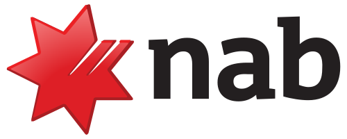
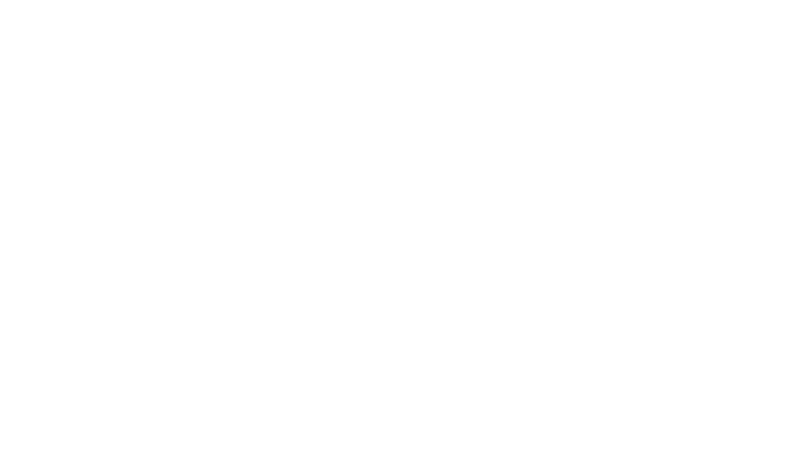
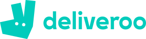
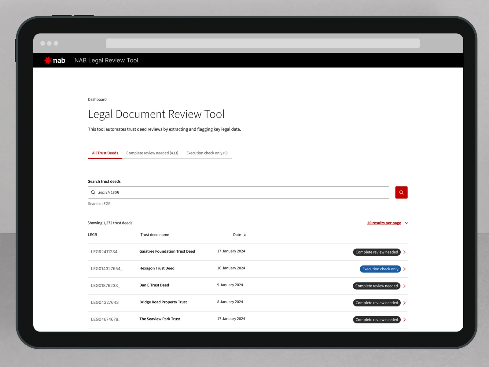
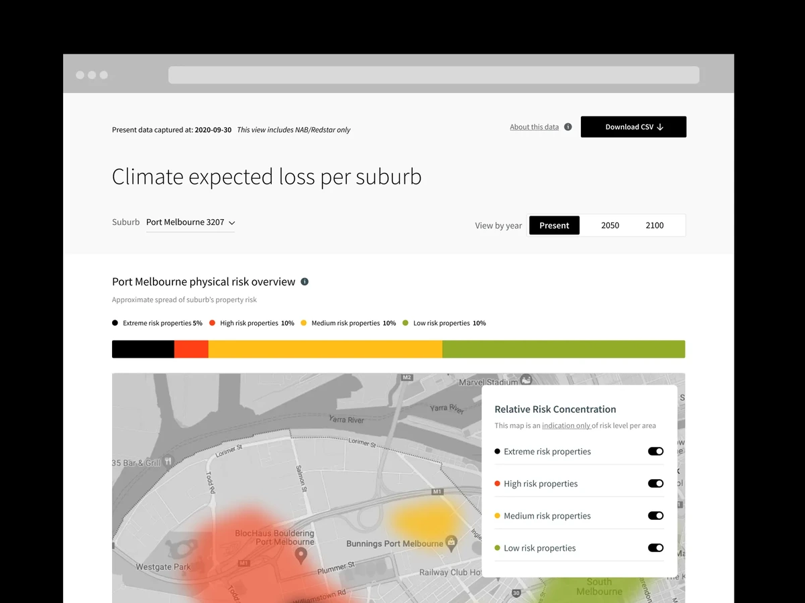
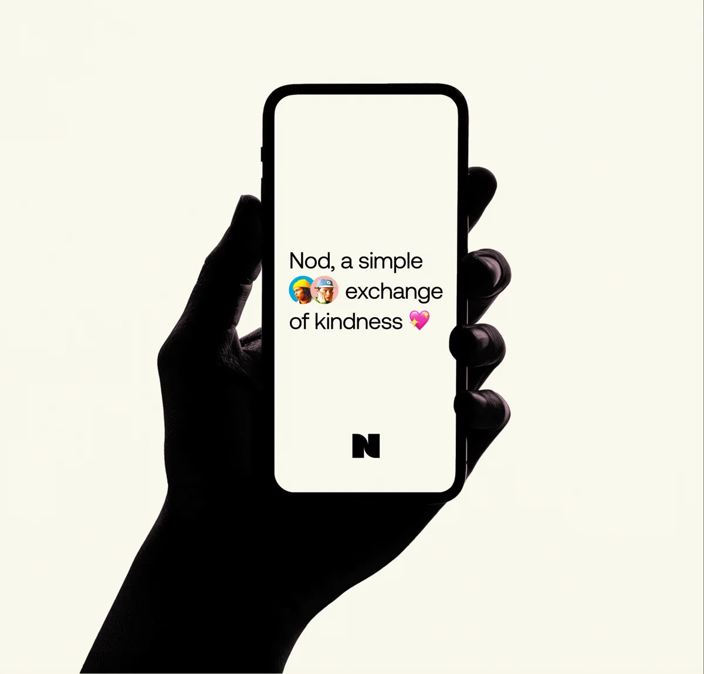
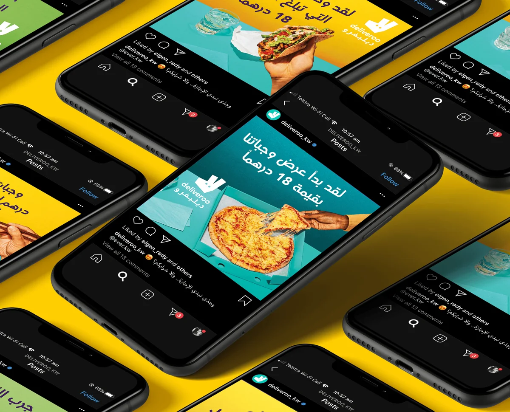
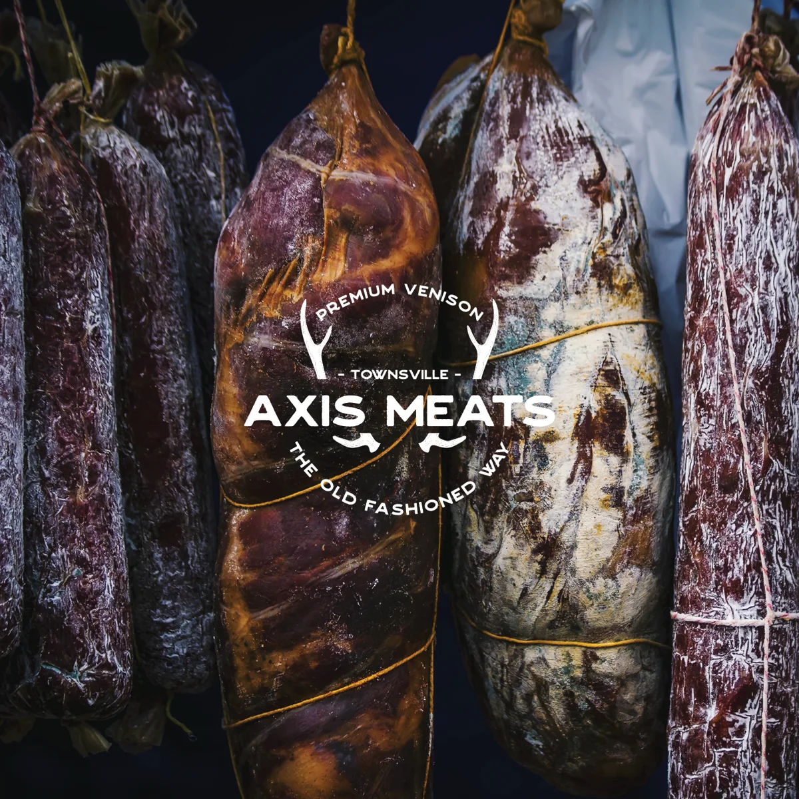
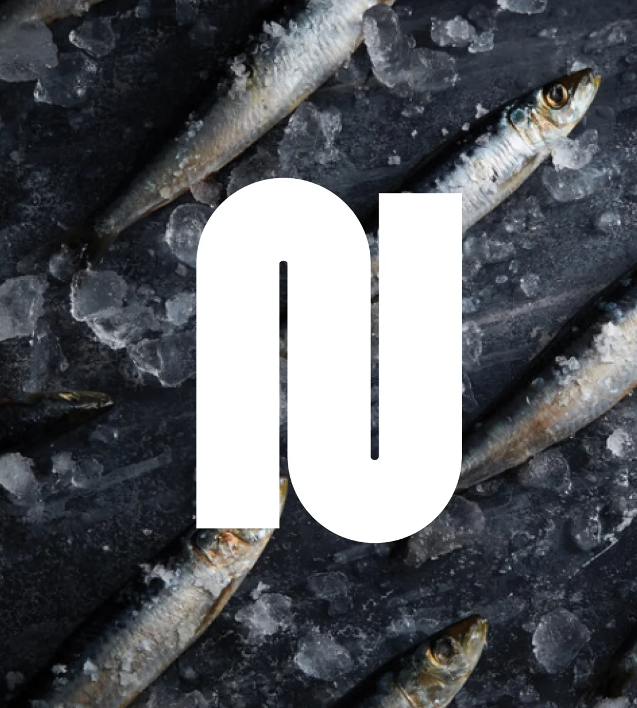
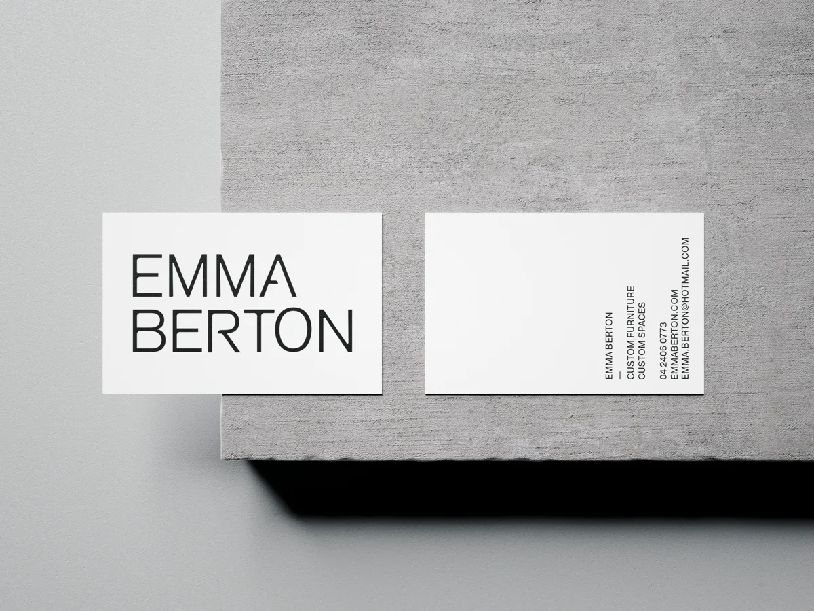

Ro makes things suck less.
Ro brings , and to industries, ensuring products work for the people who rely on them.

Nine years across fintech, government, social innovation and global consumer brands.
Some of the companies I’ve worked with



Good things said about me
Evan Hughes
Much of the capability was already in the Zodia tech stack we experimented with through 2023. Thanks to @Rowena Baulch, that old stack has been reimagined with a considered user experience. Still to be confirmed, but I expect this UX uplift to shape the global offering directly. A great example of design leadership.
Howard S
Hi @Ro, just wanted to say your update to the HomeID steeco today was brilliant. Loved it!
Echoing Howard’s feedback, that was super impressive, Ro. Great to see truly customer-led innovation taking shape.
Alicia Stenhouse
Hi team, great to see the Legal Use case in the AFR this morning! Well done @Rowena Baulch @Zain Zama @Thomas Galindo (External) and @Matt Zaba for all the work inputting into this and representing the work of the team!National Australia Bank is rolling out generative AI in these three areasJames EyersNational Australia Bank said generative AI is identifying systemic risks from customer complaints and helping bankers assess documents used…Australian Financial Review
Luke Haddrick
Also, wanted to give a shout out to @Ro for her work on the CRO program. Had lunch with the client today and they were full of praise for it. That’s the kind of feedback I truly love to hear. Well done 👏
All work
Product, research and brand projects.
-
RealDays
My venture, Victoria and Bali
A booking platform for small, owner-run experience businesses, from motorbike research in Bali to Stripe payments and listings arranged for AI search.
See Project -
Salty Cowboy booking engine
Salty Cowboy
A booking engine for a horse rescue in Bali that only offers riders the rides that fit them. Designed and built with AI, and the start of RealDays.
See Project -
CRO tests to generate leads
Afterpay
Setting up Afterpay’s Global CRO (Conversion Rate Optimisation) program, with a UX lens.
See Project -
Afterpay’s new B2B site
Afterpay
Designing Afterpay’s new B2B website for every international market, with AI workflows that go from strategy to wireframes to UI.
See Project -

Legal Document Review Tool
NAB’s Innovation Team
Designing an AI-powered tool (MVP) that streamlines NAB paralegals’ trust deed reviews - cutting average review time from forty five minutes to five.
See Project -
SAF3 MVP
NAB’s Innovation Team x Zodia Custody
Defined the design and research direction for SAF3, an institutional crypto custody solution from NAB and Zodia Custody’s partnership to bridge traditional finance and crypto.
See Project -

Climate Risk Dashboard
NAB’s Innovation Team
Designing for the future of the Australian property market with NAB’s Innovation and Strategy teams.
See Project -
Victoria’s new myki system
Department of Transport and Planning
Working with the Department of Transport and Planning to ensure new myki system meets the needs of Victoria’s general public.
See Project -

Nod
ED.
Having fun with research and concept creation whilst designing to make an impact for service workers.
See Project -

Deliveroo Social Media ads
Deliveroo (UAE)
Social media ads created for Deliveroo’s UAE market, where I was responsible for art-working photography and typesetting.
-

Axis Meats, Identity
Axis Meats, Townsville
Axis Meats is a boutique butcher based in Townsville, specialising in cured meats and authentic biltong made from dried venison. The brand pays homage to a family tradition of biltong curing passed down through generations.
-

Nguyen Dang Photography, Identity
Nguyen Dang Photography
Brand identity made to represent Nguyen Dang’s cutting-edge style of photography.
-

Emma Berton
Custom furniture designer
Melbourne furniture designer Emma Berton’s work embodies Bauhaus-inspired simplicity, practicality, and intentional form. Her brand identity includes a custom word-mark with gentle curves and precise cuts that mirror her design approach.
Frequently asked questions
What do you do?
I bring research, design and testing to complex industries, so the products people rely on actually work for them. That covers finding out what users need, designing the product, and testing it before and after it ships.
Who do you work with?
Nine years across fintech, government, social innovation and global consumer brands, including NAB, Afterpay, the Victorian Government and Athena Home Loans. I also run my own venture, RealDays.
How does working with you start?
With a 15 minute call. Tell me what you’re building and where it’s stuck, and we’ll work out whether I’m the right fit. If you’d rather write it down, email me instead.
Do you use AI in your work?
Yes, where it makes the work better. I’ve built AI workflows that take a project from strategy to wireframes to UI, and I design products that use AI. See the Afterpay B2B site and RealDays case studies.
Can you work remotely?
Remote first. I’m based in Melbourne, so I work in the APAC time zone, and I’m happy to adjust meetings to suit you.
Can you work with early-stage startups?
Yes. I’ve set up research and design from scratch, and I’m a founder myself, so I know what it’s like to move fast with a small team.
Are you available right now?
Yes, I’m taking on new work. Book a call and we’ll talk about timing.